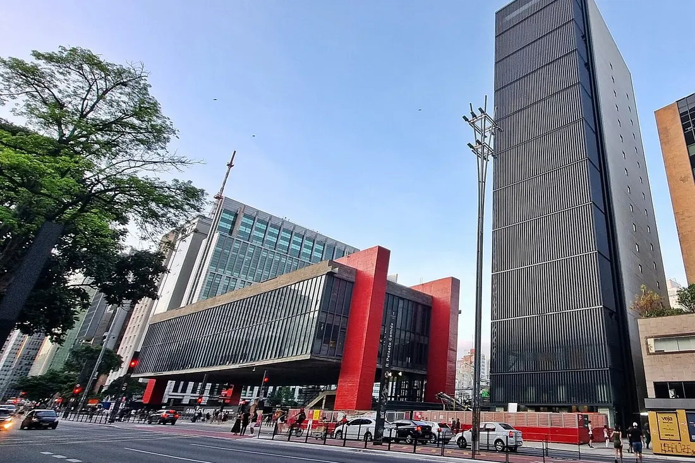

Художественный музей Сан-Паулу (МАСП)
Сан-Паулу, Бразилия
Знаменитое здание на четырёх красных опорах работы Лины бо Барди — символ современного Бразильского искусства. Картины от Босха до Рембрандта висят на стеклянных пюпитрах, а собрание французской живописи — крупнейшее в Южном полушарии.
Сайт музея